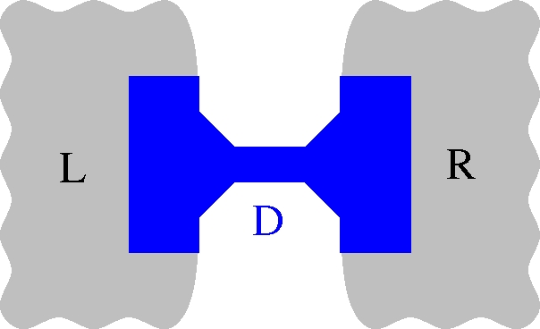
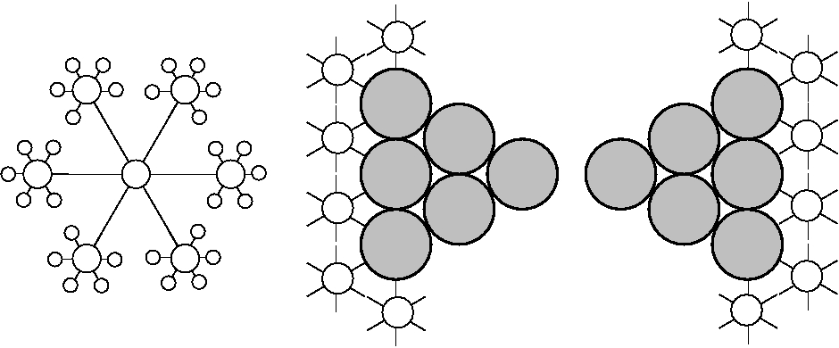

.Gaussian
ANT.Gaussian interfaces with the popular quantum chemistry code GAUSSIAN03/09 to compute the electronic structure with open boundary conditions in equilibrium and non-equilibrium situations (i.e., zero and finite bias voltage). It follows an onion shell structure, modeling the far electrodes with a parametrized Bethe lattice while computing at the density functional theory level, as implemented in GAUSSIAN03/09, the central scattering region.

Basic functionality:
- Spin-resolved transmission spectrum [T(E)] in equilibrium (linear response) or out of equilibrium (finite bias voltage) at zero temperature (T.job_name.dat).
- Total density of states [DOS(E)] and DOS projected on selected atoms and orbitals (DOS.job_name.dat).
- Orbital eigenchannel analysis (T.job_name.dat, t.job_name.dat, and standard output job_name.log).
- Average electronic potential on atoms (V.job_name.dat and standard output job_name.log).
Mulliken and spin population analysis (Q.job_name.dat
and standard output job_name.log). When the DOS is requested,
the DOS projected on atoms at a given energy (the default is the Fermi
energy) is also dumped into
Q.job_name.dat.
Advanced features:
- Spin manipulation directives for the creation of self-consistent solutions with
tailored spin textures.
- Spin-orbit coupling after selfconsistency.
- Correlation effects at the Dynamical Mean Field Theory level.
Complementary codes:
CRY2TB: Code for the extraction of Bethe lattice parameters from CRYSTAL calculations.